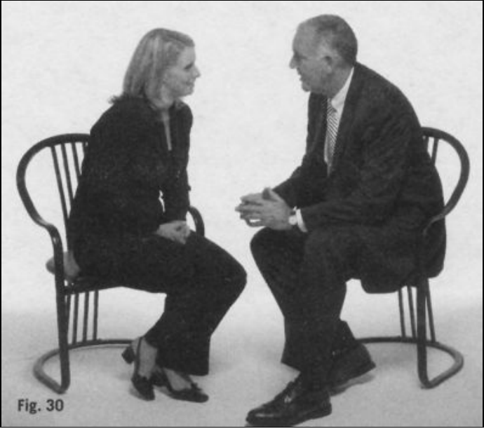
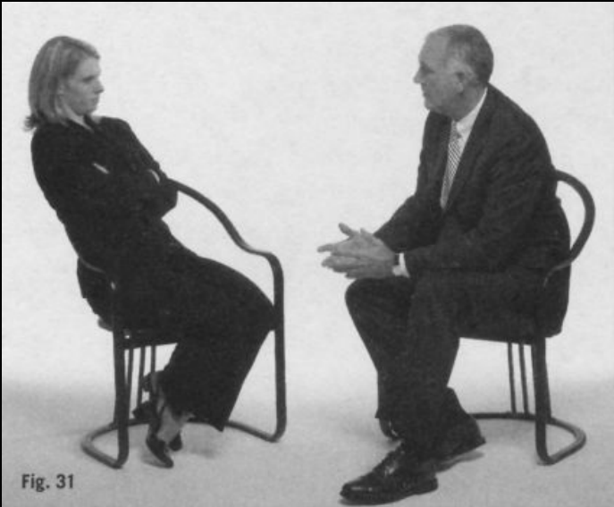
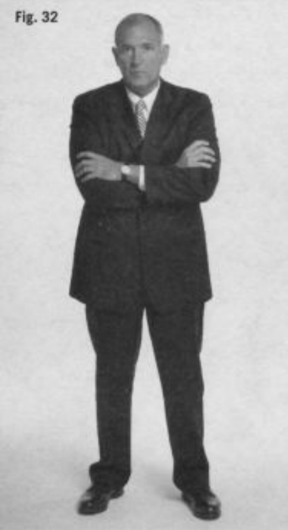
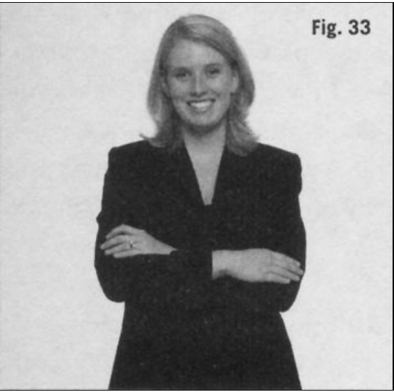
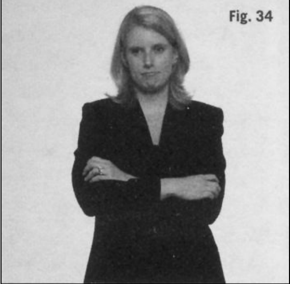
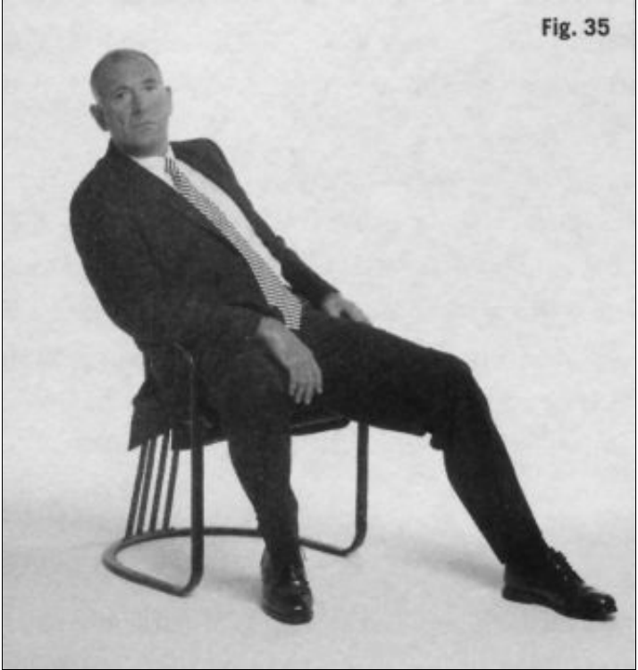
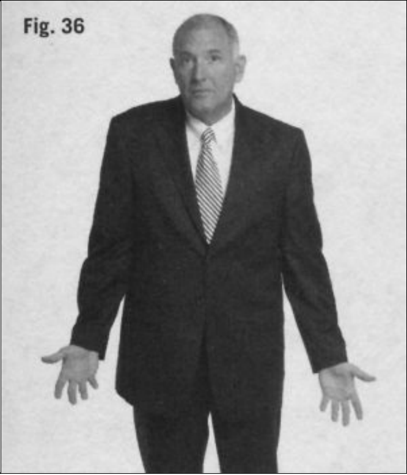
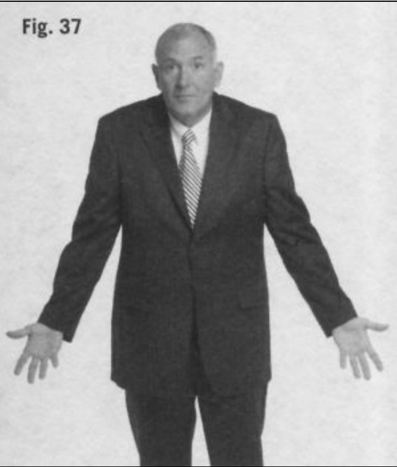
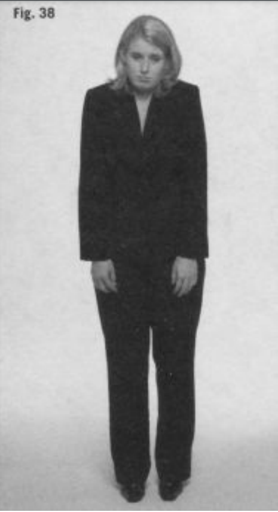

Al igual que la mayor parte de nuestro cuerpo, el torso reaccionará ante lospeligros intentando distanciarse de cualquier cosa estresante o no deseada.Por ejemplo, cuando se nos lanza un objeto, nuestro sistema límbico emiteseñales al torso indicándole que se aleje de inmediato de esa amenaza. Por logeneral, esto sucederá sea cual sea la naturaleza del objeto. Si percibimosmovimiento en nuestra dirección, nos alejaremos, ya se trate de una pelota debéisbol o un coche en marcha.
De un modo similar, cuando un individuo se encuentra de pie junto a unapersona que está siendo desagradable o que no le gusta, su torso se inclinaráalejándose de ese individuo (ver recuadro 20). Debido a que el torso cargacon gran parte de nuestro peso y se lo transmite a nuestras extremidadesinferiores, cualquier reorientación de nuestro tronco requiere energía yequilibrio. Por consiguiente, cuando alguien inclina el torso alejándolo dealguna cosa, se debe a que el cerebro se lo exige; de modo que tenemos quecontar con la sinceridad de estas reacciones. Además, se necesita un esfuerzoo energía extra para mantener estas posiciones. Intenta simplemente manteneresta posición descentrada conscientemente, ya sea agachando la cabeza oinclinándote para alejarte, y descubrirás que tu cuerpo se cansa enseguida.Sin embargo, cuando este comportamiento de desequilibrio se lleva a caboporque tu cerebro, inconscientemente, decide que es una necesidad, apenas lonotarás o no te darás cuenta en absoluto.
No sólo nos inclinaremos alejándonos de la gente que nos hace sentirincómodos, sino que también nos apartaremos, girándonos levemente deforma gradual, de aquello que no nos atrae o que detestamos. Llevé a mi hijaal Museo del Holocausto, en Washington D. C., poco después de que loinauguraran, un museo que todo aquel que visite esta ciudad debería ver.Cuando paseábamos entre la memorable exposición, me fijé en cómo seacercaban jóvenes y mayores a los objetos expuestos. Algunos iban directoshacia ellos, se inclinaban y trataban de absorber hasta el último detalle. Otrosse acercaban vacilantes. Había quienes se aproximaban y, luego, se girabandespacio y levemente, alejándose, como si la crueldad del régimen nazivulnerara sus sentidos. Otros visitantes, estupefactos por la depravación queestaban presenciando, se giraban 180 grados y se volvían hacia otro lado,mientras esperaban a que sus amigos acabaran de examinar la exposición.Sus cerebros decían: «No puedo soportar esto», y por eso sus cuerpos dabanla espalda a la exposición. La especie humana ha evolucionado hasta el puntode que no sólo la cercanía física con una persona que no nos gusta puedellevarnos a inclinarnos, alejándonos, sino que incluso las imágenes de cosasdesagradables pueden hacer que nuestro torso se incline.
Como observador atento del comportamiento humano, debes serconsciente de que el distanciamiento puede producirse de forma brusca omuy sutilmente; un mero cambio del ángulo del cuerpo de tan sólo unoscuantos grados es suficiente para expresar un sentimiento negativo. Porejemplo, las parejas que se alejan emocionalmente también empiezan ahacerlo físicamente. Sus manos no se tocan tanto, y sus torsos realmente seevitan. Cuando se sientan juntos, se inclinarán alejándose entre sí. Crean unespacio silencioso entre ellos y cuando se ven obligados a sentarse uno allado del otro, como puede ser en el asiento de atrás de un coche, giraránúnicamente la cabeza hacia el otro, no los cuerpos.
Estas manifestaciones del torso, que reflejan la necesidad del cerebrolímbico de distanciarse o evitar a algo o a alguien, son muy buenosindicadores de los verdaderos sentimientos. Cuando una persona siente que las cosas van mal en su relación, es muy probable que esté percibiendo unsutil grado de distanciamiento físico en su pareja. El distanciamiento puedetomar la forma de lo que se denomina negativa ventral. Nuestra parte(frontal) ventral, donde se hallan los ojos, la boca, el pecho, los genitales,etc., es muy sensible a lo que nos gusta y a lo que nos disgusta. Cuando lascosas van bien, exponemos nuestros lados ventrales hacia aquello que nosatrae, incluyendo a esas personas que nos hacen sentir bien. Cuando las cosasvan mal, las relaciones cambian o, incluso, cuando se habla de temas que nonos gustan, mostramos una negativa ventral, cambiando de posición ogirándonos. La parte ventral es la más vulnerable del cuerpo, así que elcerebro límbico tiene la necesidad inherente de protegerla de aquello que noshace daño o nos molesta. Ésta es la razón por la que, de un modo inmediato ysubconsciente, empezamos a girarnos levemente hacia un lado cuandoalguien que no nos gusta se nos acerca en una fiesta. En lo que se refiere arelaciones sentimentales, un aumento en la negativa ventral es uno de losmejores indicadores de que esa relación tiene problemas.
El cerebro, además de reaccionar ante lo que ve, también puede reaccionarante conversaciones que nos parecen desagradables. Mira cualquier programade entrevistas en la televisión con el volumen apagado y observa cómo losinvitados se inclinan alejándose cuando presentan argumentos opuestos. Hacepoco, estaba viendo los debates presidenciales republicanos y me di cuenta deque, a pesar de que los candidatos habían sido colocados bastante lejos entresí, aun así se inclinaban alejándose los unos de los otros cuando surgíantemas en los que no estaban de acuerdo.
Lo contrario a la negativa ventral es la exposición ventral o, como megusta llamarla, la confrontación ventral. Exponemos nuestra perspectivaventral ante aquellos que nos caen bien. Cuando nuestros hijos acudencorriendo hacia nosotros para abrazarnos, movemos objetos, incluso los brazos, apartando todo del camino para que puedan acceder a nuestro ladoventral. Nos presentamos ventralmente porque es en esa zona donde sentimosmayor calidez y bienestar. De hecho, usamos la expresión dar la espalda paraexpresar negatividad hacia alguien o algo. Ofrecemos nuestra perspectivaventral a aquellos que nos importan y nuestra espalda a aquellos que no.
De un modo similar, mostramos bienestar usando nuestros torsos yhombros para inclinarnos en dirección a lo que nos gusta. En el aula, no esinusual que los estudiantes se inclinen hacia su profesor favorito, sin darsecuenta de que están echados hacia delante, casi fuera de la silla, poniendoatención en cada palabra. ¿Recuerdas la escena de la película En busca delarca perdida en la que los estudiantes estaban inclinados hacia delante paraescuchar a su profesor? Su comportamiento no verbal indicaba claramenteque lo admiraban.
No es difícil ver a las parejas inclinándose, sentados a la mesa de un café,acercando sus cabezas para lograr un contacto visual más íntimo. Dirigen sulado ventral hacia el de su pareja, exponiendo así sus partes más vulnerables.Se trata de una respuesta natural y evolutiva del cerebro límbico que tiene unbeneficio social. Al acercarnos o exponer nuestra parte ventral (más débil)cuando algo o alguien nos gusta, mostramos que estamos entregándonos librey totalmente. Correspondiendo a esta posición a través de la imitación o de laisopraxis, se muestra una armonía social que recompensa la privacidad yexpresa que se valora.
Los comportamientos límbicos no verbales del torso, como inclinarse odistanciarse, y la exposición o negativa ventral se producen todo el tiempo enlas salas de juntas y en otras reuniones. Los colegas que comparten un mismopunto de vista se sentarán juntos, se volverán ventralmente los unos hacia losotros y se inclinarán armoniosamente entre sí. Cuando las personas no estánde acuerdo, mantienen tenso el cuerpo, evitan la confrontación ventral (a menos que tenga un carácter desafiante) y lo más probable es que se inclinenhacia atrás para alejarse. Este comportamiento,inconscientemente, dice a los demás: «No estoy de acuerdo con tu idea». Aligual que todos los gestos no verbales, estas acciones tienen que analizarse ensu contexto. Por ejemplo, alguien nuevo en un trabajo puede parecer estiradoe inflexible en una reunión. En lugar de reflejar desagrado o desacuerdo, estapostura rígida y la limitada actividad de los brazos podrían indicarsimplemente que se siente nervioso en ese nuevo entorno.
 No sólo podemos usar esta información para interpretar el lenguajecorporal de los demás, sino que también debemos recordar que estamosproyectando nuestros propios gestos no verbales. Durante conversaciones oreuniones, en las que la información fluye, nuestros sentimientos sobre lasnoticias y los puntos de vista también fluirán y se verán reflejados en nuestroscambiantes comportamientos no verbales. Si oímos algo desagradable y, almomento siguiente, algo favorable, nuestros cuerpos reflejarán este cambioen nuestros sentimientos.
Un modo muy potente de hacer saber a los demás que estás de acuerdo conellos, o que estás considerando conscientemente lo que están diciendo, esinclinarte dirigiendo tu lado ventral hacia ellos. Esta táctica es especialmenteefectiva cuando estás en una reunión y no tienes la oportunidad de expresar tuopinión.
Cuando resulta poco práctico o socialmente inaceptable inclinarse haciaatrás para alejarse de alguien o de algo que no nos gusta, a menudo usamosinconscientemente los brazos o algún objeto para que actúen de barrera. La ropa o los objetos cercanos (ver recuadro 21) también sirven para el mismo objetivo. Por ejemplo, puede que un hombre de negocios, derepente, decida abrocharse la chaqueta mientras habla con una persona con laque no se siente cómodo, y se la desabroche en cuanto la conversación acabe.
El hecho de abrocharse una chaqueta, por supuesto, no es siempre unindicador de malestar. Con frecuencia, los hombres realizan este gesto paraformalizar una situación o para mostrar deferencia por su jefe. No es el tipode bienestar total que podemos encontrar en una barbacoa, pero tampocoindica incomodidad. La ropa y la atención que prestamos a nuestraindumentaria pueden influir en las percepciones e incluso parecen indicar loaccesibles o abiertos que nos mostramos ante los demás (Knapp y Hall, 2002,206-214).
Siempre me ha dado la impresión de que los presidentes de Estados Unidosa menudo van a Camp David para conseguir, vestidos con una camisa tipopolo, lo que parece que no pueden lograr con un traje de chaqueta en la CasaBlanca, a sesenta y cinco kilómetros de distancia. Al descubrirseventralmente (quitándose los abrigos) están diciendo: «No tengo nada queocultaros». Los candidatos presidenciales transmiten este mismo mensaje noverbal en los mítines cuando se quitan las chaquetas (o los escudos, si lodeseas) y se remangan la camisa ante el «pueblo llano».
Las mujeres tienen una mayor tendencia a cubrir sus torsos que loshombres, sobre todo cuando se sienten inseguras, nerviosas o recelosas. Unamujer, probablemente, cruzará los brazos sobre el estómago, justo por debajode los pechos, en un esfuerzo por protegerse el torso y reconfortarse.También puede cruzar un brazo y agarrarse el codo opuesto, formando unabarrera frente a su pecho. Los dos comportamientos sirven inconscientementepara protegerse y aislarse, en especial en situaciones sociales en las que haycierta incomodidad.
En el campus, a menudo veo a mujeres colocar sus cuadernos de notascontra el pecho cuando entran en clase, principalmente durante los primerosdías. Cuando su nivel de bienestar aumenta, empiezan a llevar los cuadernospegados al costado. Los días de examen, este comportamiento protector delpecho tiende a aumentar, incluso entre los estudiantes varones. Las mujeres también usan mochilas, maletines o bolsos para protegerse, sobre todocuando se sientan solas. De igual forma que tú te taparías con una manta paraver la televisión, colocar algo sobre el torso ventral nos protege y nostranquiliza. Los objetos que nos acercamos al cuerpo, en especial a la zonaventral, tienen como objetivo ofrecernos la sensación de bienestar quenecesitamos en ese momento, sea cual sea la situación. Cuando veas quealguien se protege el torso, puedes usar esta observación como un indicadorpreciso de malestar por su parte. Si evalúas con cuidado las circunstancias, elorigen de ese malestar podría permitirte ayudarle o, al menos, comprenderlemejor.
Los hombres, sea por lo que sea (quizá para llamar menos la atención),también protegen su torso, pero de modos más sutiles. Un hombre alarga elbrazo hacia delante para jugar con su reloj o, como el príncipe Carlos deInglaterra hace a menudo cuando está en público, extiende el brazo paraajustarse la manga de la camisa o para jugar con los gemelos. También puedearreglarse el nudo de la corbata, tal vez durante más tiempo de lo habitual, yaque esto permite al brazo cubrir el área ventral del pecho y del cuello. Éstosson modos de protección que nos transmiten que la persona se sientelevemente insegura en ese momento.
En cierta ocasión, me encontraba en la cola de la caja de un supermercadoesperando a que la mujer que iba delante de mí acabara de hacer su compra.Estaba usando una tarjeta de débito y la máquina se la rechazaba una y otravez. Cada vez que pasaba la tarjeta e introducía el número secreto, aguardabala respuesta de la máquina con los brazos cruzados sobre el pecho, hasta que,al final, desistió y se marchó, exasperada. En cada ocasión en que la máquinarechazaba la tarjeta, sus brazos se tensaban cada vez más y sus manos secerraban con más fuerza alrededor de éstos, un signo claro de que su enfado ymalestar se intensificaban.
 Se puede observar cómo los niños cruzan o aprietan los brazos sobre elcuerpo cuando se disgustan o adoptan una actitud desafiante, incluso a edadesmuy tempranas. Estos comportamientos de protección se manifiestan en unagran variedad de formas, desde entrelazar los brazos sobre el estómago hastacruzarlos para aferrar con la mano el hombro opuesto.
Mis alumnos me preguntan con frecuencia que si el hecho de que crucenlos brazos sobre la parte delantera del cuerpo cuando están sentados en clasesignifica que les pasa algo. La cuestión no es si algo va mal, ni tampoco siesta postura significa que están bloqueando al profesor; los brazos cruzadossobre la parte delantera es una pose muy cómoda para mucha gente. Sinembargo, cuando una persona cruza los brazos de repente y luego losentrelaza con fuerza y cierra las manos para aferrarse a ellos, nosencontramos ante un indicador de malestar. Recuerda que sólo percibiremoscuándo surge el malestar si evaluamos los cambios que se producen a partirde la línea base de posturas. Observa si la persona se abre ventralmentecuando se relaja. He descubierto que, cuando doy clases, muchos de losasistentes inicialmente se sientan con los brazos cruzados, y luego los vanrelajando a medida que pasa el tiempo. Obviamente, algo sucede paraprovocar este cambio de comportamiento; probablemente se van sintiendomás cómodos con su entorno y su instructor.
Podría argumentarse que las mujeres (o los hombres) cruzan los brazossimplemente porque tienen frío. Pero esto no niega el significado no verbal,ya que el frío es una forma de malestar. La gente que se siente incómodacuando la interrogan (sospechosos en investigaciones criminales, niños conproblemas con sus padres o un empleado con una conducta inapropiada) amenudo se queja de tener frío durante el interrogatorio. Independientementede cuál sea la razón, cuando estamos angustiados, el cerebro límbico pone enfuncionamiento varios sistemas del cuerpo para preparar la respuesta de supervivencia de huida o lucha. Uno de los efectos es que la sangre secanaliza hacia los grandes músculos de las extremidades y se aleja de la pielpor si se necesitara usar esos músculos para escapar o combatir la amenaza.Como la sangre se aleja de esas áreas vitales, algunas personas pierden sutono de piel normal y adoptan un aspecto pálido, como si estuvieran enestado de shock. Dado que la sangre es la principal fuente de calor delcuerpo, el hecho de alejarla de la piel y dirigirla a los músculos másprofundos hace que la superficie del organismo se quede más fría (verrecuadro 22) (LeDoux, 1996, 131-133). Por ejemplo, en el interrogatorio quehe mencionado antes en el que el joven aferraba el cojín, el chico estuvoquejándose todo el tiempo de que tenía frío, incluso cuando apagué el aireacondicionado. Tanto su padre como yo estábamos bien; él era el único quese quejaba de la temperatura.
Inclinarse hacia delante doblando la cintura se considera, casiuniversalmente, un signo de sumisión, respeto o humildad cuando nossentimos honrados, como cuando recibimos un aplauso. Fíjate, por ejemplo,en cómo los japoneses y, actualmente en menor medida, los chinos seinclinan por respeto o deferencia. Cuando automáticamente adoptamos unaposición inclinada o hacemos una profunda reverencia doblando el torso,mostramos que nuestra actitud es sumisa o que pertenecemos a un estatusinferior.
A los occidentales no nos resulta fácil hacer una profunda reverencia antealguien, sobre todo de modo consciente. Sin embargo, si ampliamos nuestroshorizontes y nos relacionamos con orientales, se hace necesario queaprendamos a inclinar el torso levemente, especialmente cuando nosencontramos con personas ancianas que se han ganado el respeto. Este simplegesto de reverencia será reconocido por aquellos cuyas culturas muestrandeferencia a través de esta postura, y otorgará una ventaja social a aquellosoccidentales dispuestos a realizarlo. Por otra parte, a loseuropeos del este, sobre todo a los más mayores, todavía les gusta dar un taconazo e inclinarse levemente en señal de respeto. Cada vez que veo esto,pienso en lo encantador que es que la gente aún muestre cortesía y deferenciaen el mundo actual. Ya sea consciente o inconscientemente, la inclinación deltorso es un gesto no verbal de respeto hacia los demás.
Como la comunicación no verbal también incluye los símbolos, tenemosque prestar algo de atención a la vestimenta y a los demás accesorios que sellevan en el torso (y en el cuerpo, en general). Se dice que la ropa hace alhombre, y yo estaría de acuerdo, al menos en términos de apariencias.Numerosos estudios han establecido que aquello que vestimos, ya sea un trajeo prendas informales, incluso los colores de nuestro atuendo —un traje azulen contraste con uno marrón—, influirá en los demás (Knapp y Hall, 2002,206-214).
La ropa dice mucho de nosotros y puede hacer mucho por nosotros. Encierto modo, nuestro torso es una valla publicitaria donde anunciamosnuestros sentimientos. Durante el cortejo, nos vestimos para cautivar; en eltrabajo, lo hacemos para triunfar. De un modo similar, la chaqueta del equipodel instituto, la placa de policía o la condecoración militar se llevan en eltorso como una forma de llamar la atención hacia nuestros logros. Siqueremos que se fijen en nosotros, debemos centrarnos en el torso, porque esahí donde los demás pondrán su atención. Cuando el presidente da el discursodel estado de la Unión, las mujeres vestidas de rojo que ves en un mar azul ygris son aquellas que, al igual que los pájaros que exhiben su plumaje, vistencon colores vivos para llamar la atención.
La ropa puede ser muy aburrida, muy siniestra (piensa en el atuendo de unskinhead o en un look gótico) o muy extravagante (como la de los músicosLiberace o Elton John), y refleja el estado de ánimo y la personalidad dequien la lleva. Podemos usar adornos para el torso o dejar partes desnudas de éste para atraer a los demás, para hacer alarde de lo musculosos o en formaque estamos, o para anunciar dónde encajamos social, económica olaboralmente. Esto podría explicar por qué tanta gente se preocupaexcesivamente sobre lo que va a ponerse para asistir a un acto prominente o auna cita importante. Nuestros adornos personales nos permiten mostrarnuestra procedencia o nuestra lealtad a un grupo en particular, por ejemplo,vistiendo los colores de nuestro equipo favorito.
La ropa puede ser muy descriptiva: revelará si la gente está de celebracióno de luto, si es de alto o bajo estatus, si se ajusta a las normas sociales o sipertenece a una secta (el judaísmo jasídico, los granjeros Amish o los HareKrishna, por ejemplo). En cierto modo, somos lo que vestimos (ver recuadro24). Durante años, la gente me decía que yo vestía como un agente del FBI, ytenía razón: llevaba el uniforme estándar de un agente: traje azul marino,camisa blanca, corbata color burdeos, zapatos negros y pelo corto.
Obviamente, debido a que nuestros roles laborales requieren un atuendoespecífico y como tomamos decisiones de un modo consciente en lo referentea la ropa, debemos tener cuidado a la hora de valorar lo que significa. Al fin yal cabo, el joven que se halla de pie ante tu puerta con el uniforme de técnicode teléfonos podría ser un delincuente que ha comprado o robado el atuendopara lograr el acceso a tu casa.
Con las advertencias anteriormente mencionadas, la ropa tiene queconsiderarse dentro del esquema general de la evaluación no verbal. Por esarazón, es importante que la que llevemos sea congruente con los mensajesque queramos transmitir a los demás, siempre que deseemos influir en sucomportamiento de un modo positivo o beneficioso para nosotros.
Cuando escojas tu vestuario y accesorios, sé siempre consciente delmensaje que estás transmitiendo con ellos y el significado que otros puedenpercibir en tu atuendo. También considera que, aunque desees usar tu ropa para enviar una señal a una persona o grupo de gente en un momento y lugarespecíficos, ¡puede que te encuentres por el camino con muchas otraspersonas que no sean tan receptivas a tu mensaje!
En los seminarios, planteo con frecuencia la siguiente cuestión: «¿Cuántosde vosotros vestís hoy en día al gusto de vuestra madre?». Por supuesto, todoel mundo se ríe y nadie levanta la mano. Entonces, digo: «Bueno, esosignifica que todos vosotros escogéis vestiros del modo en que lo hacéis». Esentonces cuando miran a su alrededor y, quizá por primera vez, se dan cuentade que podrían esforzarse más a la hora de vestirse y presentarse a sí mismos.Al fin y al cabo, antes de que dos personas se conozcan, lo único que tienecada una de la otra es la apariencia física y otras comunicaciones no verbales.Posiblemente sea el momento de considerar cómo te perciben los demás.
Cuando estamos bien física y mentalmente, cuidamos nuestro aspecto, nosarreglamos y nos acicalamos. Los humanos no somos únicos en este sentido,ya que los pájaros y también otros mamíferos adoptan comportamientossimilares. Por otra parte, cuando nos encontramos física o mentalmenteenfermos, la postura del torso y de los hombros, al igual que nuestraapariencia general, puede indicar nuestra mala salud (American PsychiatricAssociation, 2000, 304-307, 350-352). Mucha gente desafortunada y sinhogar padece esquizofrenia y rara vez se ocupa de su atuendo. Sus ropasestán sucias y mugrientas, y muchos de estos individuos incluso se resistirána los esfuerzos de otros por hacer que se bañen o se pongan ropa limpia. Lapersona mentalmente deprimida se encorva cuando camina o está de pie,porque parece que sostiene todo el peso del mundo sobre sus hombros.
Antropólogos, asistentes sociales y profesionales de la medicina de todo elmundo se han fijado en el hecho de que nos arreglamos poco cuando estamosenfermos o tristes. En esos momentos, el arreglo y el cuidado de la presenciafísica están entre las primeras cosas que desaparecen (Darwin, 1872, cap. 3,pássim). Por ejemplo, los pacientes que se recuperan de una operaciónquirúrgica pueden pasear por el pasillo del hospital con el pelo desaliñado y camisones que dejan expuesta la parte posterior de su cuerpo, sin que lespreocupe su apariencia personal. Cuando estás realmente enfermo, puedesdeambular por tu casa con un aspecto más descuidado del que tendríasnormalmente. El cerebro de una persona que está realmente enferma otraumatizada tiene otras prioridades, y arreglarse simplemente no es una deellas. Por consiguiente, dentro del tema que nos ocupa, podemos usar la faltageneral de higiene personal o de interés por arreglarse para hacersuposiciones sobre el estado de ánimo o de salud de una persona.
Repantigarse en un sofá o una silla, normalmente, es un signo de bienestar.Sin embargo, cuando hay temas importantes que tratar, este gesto es unamuestra territorial o de dominación Los adolescentes, enparticular, a menudo se sientan de esta manera como un modo no verbal dedominar su entorno mientras sus padres los reprenden. Este comportamientode laxitud es irrespetuoso y muestra indiferencia hacia la autoridad. Se tratade una muestra territorial que no debería fomentarse ni tolerarse.
Si tu hijo adopta este comportamiento cada vez que se encuentra en seriosproblemas, tienes que neutralizar este comportamiento inmediatamentepidiéndole que se siente bien y, si eso falla, invadiendo no verbalmente suespacio (sentándote a su lado o colocándote de pie detrás de él, muy cerca).
De inmediato, el niño tendrá una respuesta límbica a tu «invasión» espacialque le obligará a sentarse bien. Si le permites que se salga con la suyadejando el torso laxo durante las discusiones graves, que no te sorprenda quecon el tiempo te pierda el respeto, ya que, al permitir estas poses, básicamentele estás diciendo: «Es correcto faltarme al respeto». Cuando estos niñoscrezcan, seguramente seguirán repantigándose de un modo inapropiado en el lugar de trabajo cuando, en realidad, deberían estar bien sentados y prestaratención. Esto no contribuye a la «longevidad» en el trabajo, ya que transmiteun fuerte mensaje no verbal negativo de falta de respeto hacia la autoridad.
Los humanos, al igual que muchas otras criaturas (como los lagartos, lospájaros, los perros y nuestros compañeros los primates), hinchan el pechocuando intentan establecer el dominio territorial (Givens, 1998-2007).Observa a dos personas que estén enfadadas; hincharán el pecho como losgorilas. Aunque puede parecer casi cómico cuando vemos a los demáshacerlo, el gesto de hinchar el pecho no debería ignorarse, porque lasobservaciones han demostrado que, cuando alguien está a punto de atacar aotra persona, hace precisamente eso. Esto puede observarse en los patios delos colegios, cuando los niños están a punto de pelearse, o entre boxeadoresprofesionales, cuando se provocan verbalmente antes de un combateimportante, con el pecho hacia fuera, inclinándose el uno hacia el otro yproclamando que están seguros de que ganarán. El gran Muhammad Alihacía esto mejor que nadie durante los eventos previos al combate. No sóloera amenazador, sino que también resultaba divertido; todo era parte delespectáculo, lo cual contribuía a un buen teatro y, por supuesto, a la venta deentradas.
A veces, en las peleas callejeras, la persona que se prepara para arremetercontra un oponente se desviste o se quita una prenda, como una camisa o unsombrero. Nadie está seguro de si esto se hace simplemente como ejercicio de calentamiento, para proteger la prenda que se quita o para privar aloponente de algún tipo de agarre que pueda usar a su favor. No obstante, encualquier caso, si te enzarzas en una discusión con alguien y esa persona sequita el sombrero, la camisa o cualquier otra prenda, lo más probable es quehaya una pelea en perspectiva
Cuando una persona está bajo tensión, normalmente puede verse cómo supecho se agita o se expande y se contrae rápidamente. Cuando el sistemalímbico se excita y se prepara para escapar o luchar, el cuerpo intenta tomartanto oxígeno como le sea posible, respirando profundamente o jadeando. Elpecho del individuo estresado se agita porque el cerebro límbico le estádiciendo: «Posible problema, ¡aumenta el consumo de oxígeno por sitenemos que escapar o luchar sin previo aviso!». Cuando veas este tipo decomportamiento no verbal en una persona sana, deberías averiguar por quéestá tan estresada.
Encoger los hombros, leve o totalmente, puede significar muchodependiendo del contexto. Cuando un jefe pregunta a un empleado: «¿Sabesalgo sobre la queja de este cliente?» y el empleado responde: «No», al tiempoque encoge los hombros a medias, lo más probable es que no quierarelacionarse con lo que se está hablando. Una respuesta sincera haría que losdos hombros se alzaran con fuerza y de la misma forma. Cuando la genteencoge los hombros con fuerza y claridad es porque apoyan con todaconfianza lo que están diciendo. No hay nada malo en decir: «¡No lo sé!», altiempo que se alzan los dos hombros hacia las orejas. Como ya se hacomentado anteriormente, éste es un comportamiento que desafía a lagravedad, lo cual normalmente significa que la persona está cómoda y segurade sus acciones. Si ves que alguien alza los hombros sólo parcialmente, o quetan sólo encoge uno de ellos, lo más probable es que el individuo no estélímbicamente comprometido con lo que está diciendo y que esté siendoevasivo o incluso mienta.
 Y siguiendo con los hombros, fíjate en aquellas personas que, mientrasconversan o como reacción a un suceso negativo, mueven el cuerpo de formaque los hombros empiezan a alzarse lentamente hacia las orejas, dando laimpresión de que el cuello desaparece. La acción clave aquí esque los hombros se encogen lentamente. La persona que exhibe este tipo delenguaje corporal, básicamente, está intentando hacer desaparecer su cabeza,como una tortuga. Un individuo así carece de confianza y se encuentraextremadamente incómodo. He visto este comportamiento en reuniones denegocios, cuando el jefe entra y dice: «Muy bien, quiero saber qué ha estadohaciendo todo el mundo». Mientras algunas personas de la sala hablarán conorgullo de sus logros, los empleados con menos rendimiento irán encogiendoy alzando los hombros cada vez más en un esfuerzo inconsciente por ocultarla cabeza.
Este comportamiento similar al de la tortuga también se manifiesta en lasfamilias cuando el padre dice: «Me duele mucho descubrir que alguien haroto mi lámpara de lectura y no me ha dicho nada». Cuando el padre mira acada uno de sus hijos, uno de ellos dirigirá la mirada al suelo y encogerá loshombros para llevarlos hacia las orejas. También puedes ver esta muestra dedebilidad en un equipo de fútbol que ha perdido y regresa al vestuario. Pareceque los hombros se traguen sus propias cabezas.